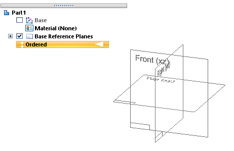
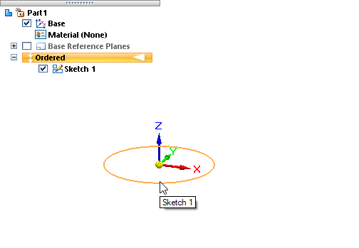
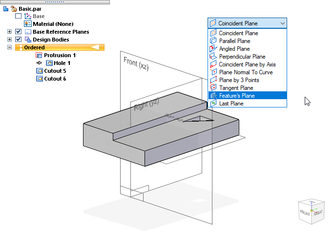
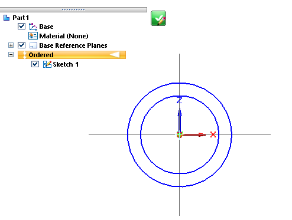
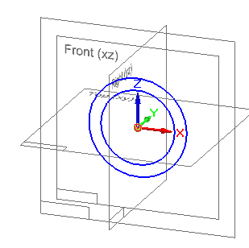

Draw an ordered sketch of a part
You can draw an ordered sketch in an Ordered Part or Ordered Sheet Metal document, using the commands on the Home tab. When in-place activated from an assembly, the commands are located on the Home tab and the Sketching tab.
-
Begin the 2D sketch by selecting a 2D drawing command or the Sketch command from the Home tab→Sketch group:
 Example:
Example:Here are some criteria for choosing a starting command:
-
In a new document, select the Circle by Center Point command or another drawing command to start a sketch.
-
To add sketch elements to an existing sketch, choose a drawing command.
-
To sketch on a part face in the document, select the Sketch command.
If you selected a drawing command, PromptBar displays the available workflow options:
-
"Click on an existing sketch to edit or click on a planar face or reference plane to create a new sketch. To select a plane, change the Create-From options by clicking on the list."
-
-
Do one of the following:
-
If you selected a drawing command in a new document, the base reference planes are displayed and the drawing command bar shows Coincident Plane as the default sketch plane type. Define a sketch profile plane by clicking one of the base reference planes. You can change the reference plane type using the Create-From Options list on the command bar.
Example:This new document in Ordered mode contains no sketches.

-
If you selected a drawing command in a document that already contains one or more sketches, you have the option of adding sketch elements to an ordered sketch. The drawing command bar shows Select Sketch as the default sketch plane type. Click a sketch element to specify the sketch to edit.
Example:This document contains one sketch. If there were several sketches, the sketch that contains the element you click would be highlighted in PathFinder and opened for editing.

In an assembly document, you can only add to sketches in the top-level assembly. When in-place activated from the assembly, you cannot select sketches from other documents.
-
If you selected the Sketch command , then the Sketch environment is opened and the Sketch command bar is displayed showing Coincident Plane as the default option. You can sketch on a part face by clicking a face on the model, or you can choose a different plane.
Example:To sketch on the base reference plane used to create a feature, select Feature's Plane in the Create-From Options list. To learn how to define different types of reference planes, see Defining reference plane orientation (ordered).

In each case, a profile sketch view is displayed in the Sketch environment.
-
If you selected an existing sketch to edit, the selected sketch is opened in the sketch view.
-
If you selected the Sketch command, the default Line command is started for you, but you can choose a different command from the ribbon.
-
-
Follow the prompts to draw the 2D sketch geometry in the profile sketch view. To learn how to use the drawing commands, see Drawing 2D elements.

-
When you are done drawing the sketch profile, click the green check box
 in the sketch view window to save the sketch geometry and continue. You can also
choose the Home tab→Close group→Close Sketch command.
in the sketch view window to save the sketch geometry and continue. You can also
choose the Home tab→Close group→Close Sketch command. -
(Optional) You can assign a name to the sketch by typing it in the Name box on the Sketch command bar. In an ordered document, this helps you identify how sketches are used to define the model.

-
When you are finished with all work in the sketch, on the command bar, click the Finish button, and then click Cancel to end the command.
-
You can modify the sketch in two ways:
-
Before you click Finish, you can click the Draw Sketch Step group button on the command bar to return to the sketch view window.
-
If you already clicked Finish and exited the sketch, you can reopen the sketch for editing by doing either of the following:
-
Click the sketch in the graphics window. From the command bar, choose either Edit Definition or Dynamic Edit.
-
Right-click the sketch name in PathFinder, and then choose Edit Profile or Edit Definition from the shortcut menu.
When you edit an ordered sketch, the sketch icon in PathFinder changes to denote it is the active sketch.
-
-
-
You can use the sketches to construct features. To do this, use the Select From Sketch option on the command bar.
If you later edit the sketch, the features will update.
How do I
Try drawing this simple sketchDraw a synchronous sketch
Draw an assembly layout